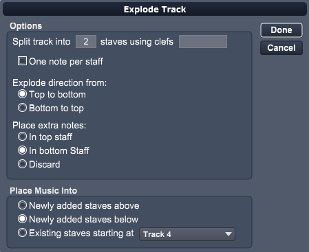
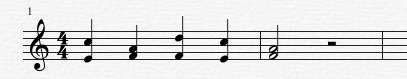
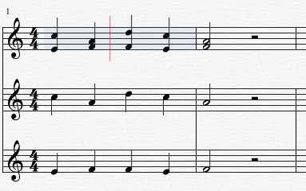

Choose this command to open the Explode Track dialog.

Note: Explode Track is only enabled when entire measures on a single track are selected. This is done by double clicking on a measure or to select the entire track, double click just before the left edge bar line of any track.
The Explode Track dialog displays a list of options for exploding one track into several new tracks.
Split track into __ staves using clefs _____
The first number determines how many resultant tracks to use in exploding notes. The second field contains clef numbers for each resultant track. 0 - treble, 1 - bass, 2 - alto, 3 - tenor. If you leave this blank the current track's clef will be used. Eg. The pattern 02 would result in a treble clef track (0) and an alto clef track (2).
One note per staff
Check this box to make sure each track receives only one note. Any extra notes will then be distributed according to the Place extra notes settings.
Explode direction from
Set these options to determine how the notes will be placed on resultant tracks.
Place extra notes
Use these options when there are more notes in a chord than the resultant tracks. For example, a three note chord, with two resultant track would leave one note. These settings tell Overture what to do with the remaining note.
Place music into
To explode the following two measures into two tracks:

